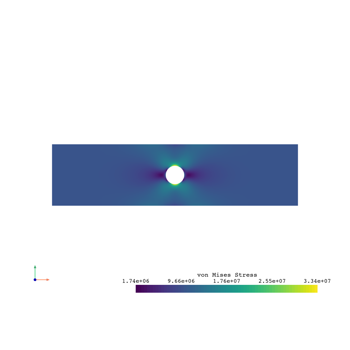
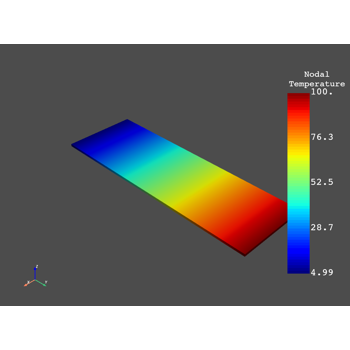
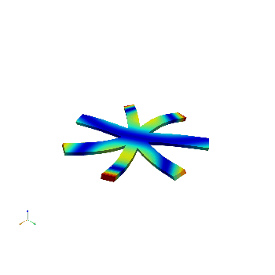
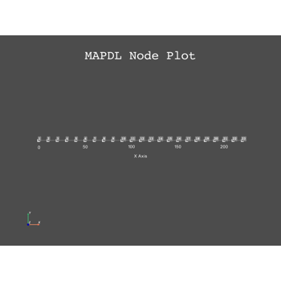
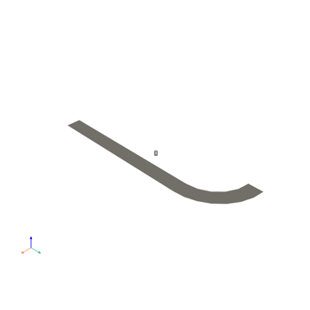
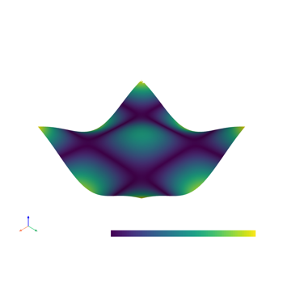

Full Examples Using PyMAPDL#
These examples demonstrate full examples using the PyMAPDL module.

MAPDL 2D Plane Stress Concentration Analysis
MAPDL 2D Plane Stress Concentration Analysis


3D Stress Concentration Analysis for a Notched Plate
3D Stress Concentration Analysis for a Notched Plate

Basic Thermal Analysis with pyMAPDL
Basic Thermal Analysis with pyMAPDL


Cyclic Analysis



MAPDL 2D Beam Example


Pressure Vessel

PyVista Mesh Integration